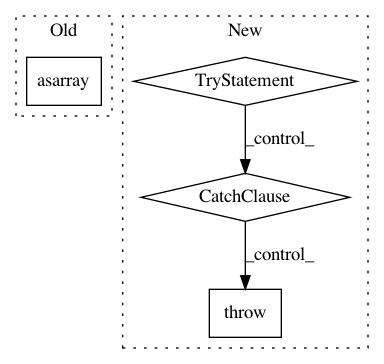

5781ad6adae3c4e4f264eab4de9050095eab6a6d,scipy/optimize/minpack.py,,curve_fit,#Any#Any#Any#Any#Any#Any#Any#Any#Any#Any#,489
Before Change
else:
xdata = np.asarray(xdata)
weights = 1.0 / asarray(sigma) if sigma is not None else None
func = _wrap_func(f, xdata, ydata, weights)
if callable(jac):
jac = _wrap_jac(jac, xdata, weights)
After Change
// if 2-d, sigma is the covariance matrix,
// define transform = L such that L L^T = C
elif sigma.shape == (ydata.size, ydata.size):
try:
// scipy.linalg.cholesky requires lower=True to return L L^T = A
transform = cholesky(sigma, lower=True)
except LinAlgError:
raise ValueError("`sigma` must be positive definite.")
else:
raise ValueError("`sigma` has incorrect shape.")
else:
transform = None
In pattern: SUPERPATTERN
Frequency: 3
Non-data size: 4
Instances
Project Name: scipy/scipy
Commit Name: 5781ad6adae3c4e4f264eab4de9050095eab6a6d
Time: 2016-08-27
Author: surhud.more@ipmu.jp
File Name: scipy/optimize/minpack.py
Class Name:
Method Name: curve_fit
Project Name: horovod/horovod
Commit Name: 7d90bd15cf2112db4881429c909aa6104749b870
Time: 2018-12-10
Author: fardin.abdi@gmail.com
File Name: examples/tensorflow_mnist_estimator.py
Class Name:
Method Name: main
Project Name: pandas-dev/pandas
Commit Name: 191f859673b755237a99d24f8f4bed4b738870dc
Time: 2020-11-12
Author: jbrockmendel@gmail.com
File Name: pandas/core/indexes/category.py
Class Name: CategoricalIndex
Method Name: _convert_list_indexer